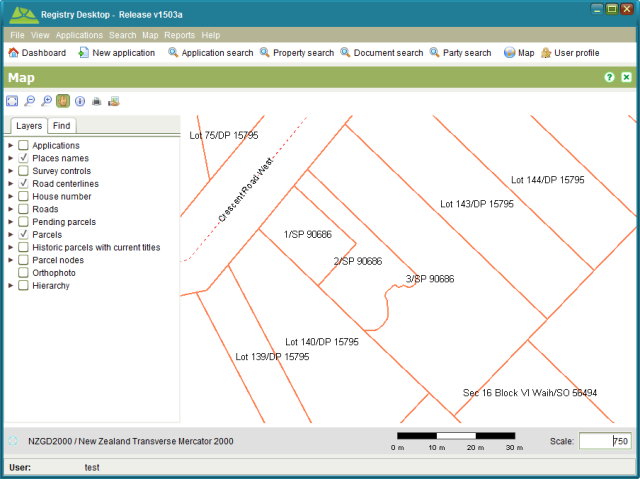

Changes made to the cadastre remain pending until the application containing the Record Plan
service is approved. You can approve the application by completing all services on the
application and approving the application using the Approve tool in the Application
action dropdown. The new parcels will then show as current parcels in the SOLA Map Viewer.
Approve tool in the Application
action dropdown. The new parcels will then show as current parcels in the SOLA Map Viewer.

Approved Plan